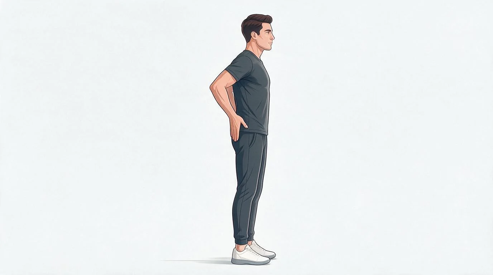
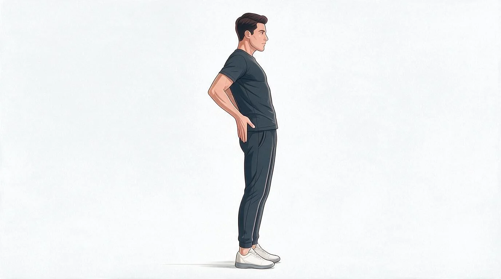
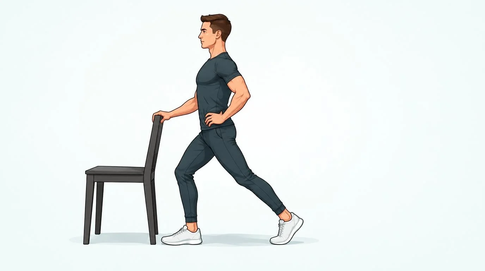
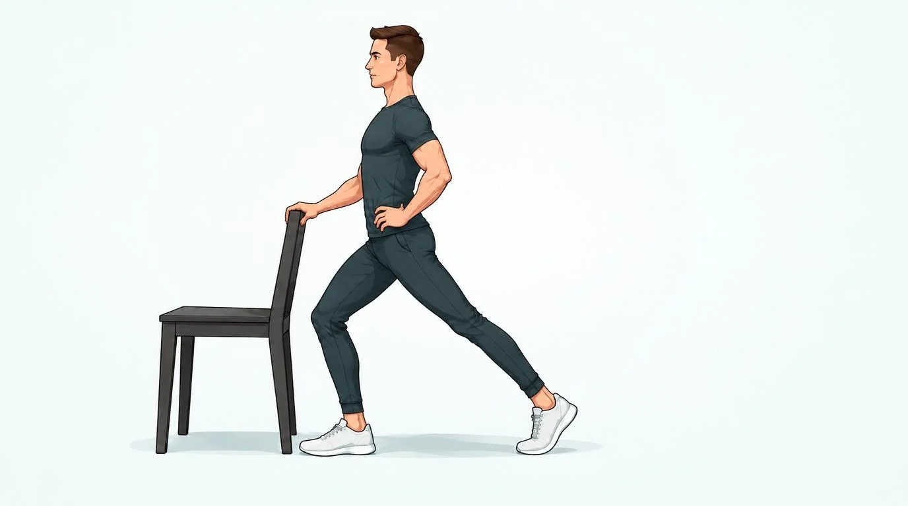
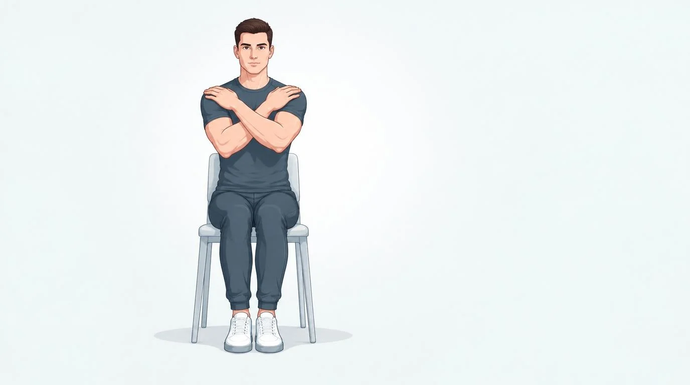
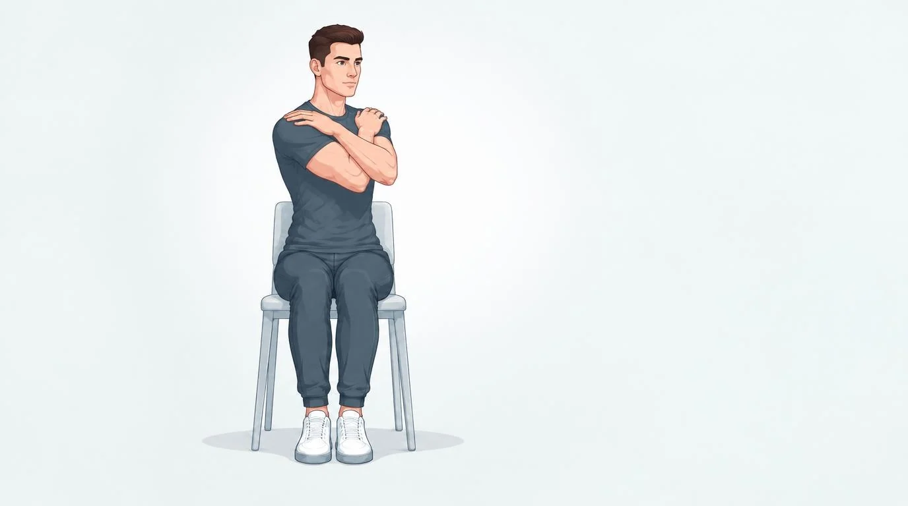
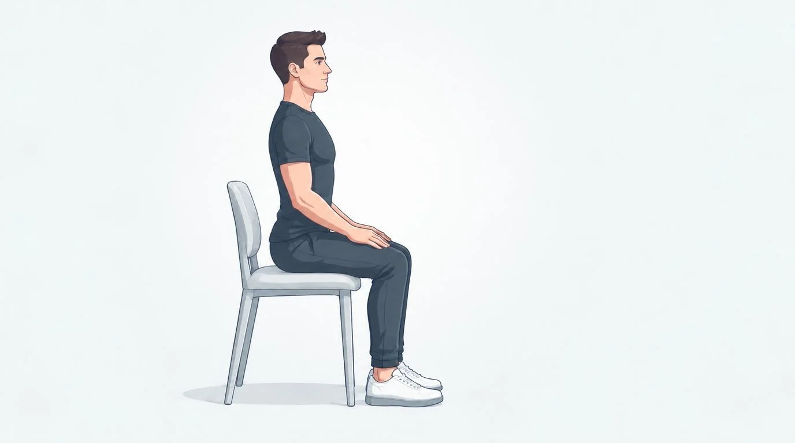
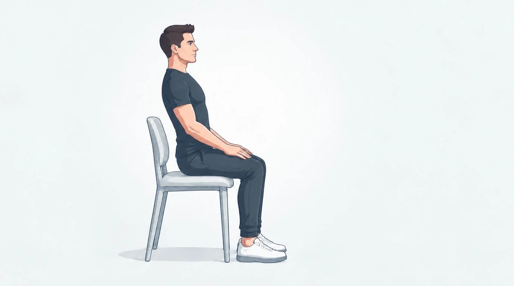

Praca przy biurku
Przerwy w pracy przy komputerze: jak często, co w nich robić i ile chodzić
Przy pracy przy komputerze najtrudniej nie o samą przerwę, tylko o to, żeby o niej pamiętać. Sprawdź, co mówią przepisy, jak często warto wstawać i jak wykorzystać kilka minut przerwy dla pleców i oczu. Na końcu: ile chodzić w ciągu dnia i jak zacząć spacerować.
Ile przerwy przysługuje przy komputerze
W Polsce przerwy przy komputerze opisują dwa przepisy. Wiele osób szuka ich w Kodeksie pracy, ale przerwa „monitorowa” jest w rozporządzeniu BHP.
- Rozporządzenie BHP dla stanowisk z monitorami. Pracodawca zapewnia co najmniej 5 minut przerwy po każdej godzinie pracy przy monitorze, wliczanej do czasu pracy. Zamiast przerwy może przeplatać pracę przy ekranie innymi zajęciami, które nie obciążają wzroku i są wykonywane w innej pozycji ciała, tak żeby praca przy monitorze nie trwała bez przerwy dłużej niż godzinę13.
- Kogo to dotyczy. Osób, które korzystają z monitora co najmniej przez połowę dobowego wymiaru czasu pracy13.
- Kodeks pracy. Niezależnie od tego, przy dobowym wymiarze czasu pracy wynoszącym co najmniej 6 godzin przysługuje co najmniej 15 minut przerwy, także wliczanej do czasu pracy23.
Przy 8 godzinach pracy przy komputerze to więc kilka pięciominutowych przerw i dodatkowo co najmniej 15 minut przerwy z Kodeksu pracy12.
Jak często wstawać od biurka
Przepis wyznacza minimum. Nie ma jednego naukowego standardu, jak często robić przerwy4. Eksperci EU-OSHA radzą wstawać na krótko co 20-30 minut i nie trwać długo w jednej pozycji4. Wytyczne WHO zalecają ograniczać czas siedzenia i zastępować go dowolnym ruchem, nawet lekkim5.
Krótkie przerwy w pracy, także kilkuminutowe, poprawiają samopoczucie i zmniejszają zmęczenie, choć efekt jest niewielki6. Przerywanie siedzenia krótkim marszem korzystnie wpływa też na poziom cukru po posiłku, co pokazało małe badanie u osób z nadwagą9.
Co robić w przerwie
Nie ma dowodów, że jeden rodzaj przerwy jest lepszy od innych78. Najprościej połączyć kilka rzeczy:
- Wstań i przejdź się. Do kuchni, po wodę, na drugi koniec biura. Rozmowę telefoniczną możesz odbyć na stojąco lub w ruchu45.
- Zmień pozycję. W jednym badaniu z pracownikami biurowymi z grupy ryzyka bólu dołu pleców zarówno przerwy z ruchem, jak i częste zmiany pozycji wiązały się z rzadszym pojawianiem się bólu. To wynik jednego badania8.
- Daj odpocząć oczom. Oderwij wzrok od ekranu i popatrz na coś daleko, na przykład za okno. Przy ekranie mrugamy rzadziej, więc świadomie mrugnij kilka razy11. Popularna zasada 20-20-20 (co 20 minut przez 20 sekund patrzeć w dal) to prosty nawyk, ale jej skuteczność nie jest dobrze zbadana1211.
- Zrób kilka ćwiczeń. Cztery propozycje dla pleców znajdziesz poniżej. Ruchy na kark i barki są w poradniku 5 ćwiczeń na kark w przerwie.
4 ćwiczenia na plecy do przerwy
Każde zajmuje około minuty. Wybierz jedno lub dwa na krótką przerwę, a wszystkie cztery na dłuższą. Ćwicz spokojnie i w zakresie bez bólu. Lekkie ciągnięcie przy rozciąganiu jest w porządku, ból nie.


Ćwiczenie 1 z 4
Wyprost tułowia w staniu z dłońmi na biodrach
Kilka spokojnych odchyleń tułowia do tyłu na stojąco, z dłońmi podpierającymi miednicę, krótka zmiana pozycji po dłuższym siedzeniu.
- W przerwie
- 5 powolnych odchyleń
- Pełna dawka w aplikacji
- 1-2 serie po 5-10 powtórzeń (zatrzymanie 1-2 s), zakres mały do średniego
- Potrzebne
- Bez sprzętu
Jak wykonać
- Stań prosto, stopy na szerokość bioder, kolana proste, ale niezablokowane. Dłonie oprzyj z tyłu na miednicy, tuż poniżej pasa, palce skierowane w dół.
- Z wydechem powoli odchyl tułów do tyłu, podpierając się dłońmi. Biodra zostają nad stopami, wzrok przed siebie, głowa w przedłużeniu tułowia.
- Zakres mały do średniego, do pierwszego wyraźnego oporu, bez bólu. Zatrzymaj 1-2 sekundy.
- Z wdechem powoli wróć do pionu.
Częste błędy
- Odchylanie głowy do tyłu.
- Wypychanie bioder daleko w przód i uginanie kolan.
- Dociskanie na siłę do końca zakresu.
- Szybkie, sprężynujące ruchy.


Ćwiczenie 2 z 4
Rozciąganie przodu biodra w staniu przy krześle
Rozciąganie przodu biodra w wykroku, z dłonią na stabilnej podporze, bez schodzenia na podłogę.
- W przerwie
- 30 s na każdą stronę
- Pełna dawka w aplikacji
- 1-2 serie po 30-40 s na stronę; w Przerwie 1 × 30 s na stronę
- Potrzebne
- Stabilne krzesło bez kółek, blat lub ściana
Jak wykonać
- Stań w wykroku, jedna dłoń na blacie, ścianie albo oparciu ciężkiego krzesła bez kółek.
- Tylna stopa na palcach, tylne kolano proste, ale nie zablokowane; tułów pionowo.
- Podwiń miednicę i napnij pośladek tylnej nogi.
- Przesuń biodra lekko w przód, aż poczujesz rozciąganie z przodu biodra. Oddychaj spokojnie.
Częste błędy
- Wyginanie lędźwi w łuk.
- Chwytanie stopy ręką.
- Opieranie się o krzesło na kółkach.


Ćwiczenie 3 z 4
Skręt tułowia w siadzie
Skręt klatki piersiowej w siadzie przy miednicy stabilnej na siedzisku.
- W przerwie
- 5 skrętów w każdą stronę
- Pełna dawka w aplikacji
- 1-2 serie po 6-10 powtórzeń na stronę (pauza 2 s; przy osteoporozie bez pauzy)
- Potrzebne
- Krzesło (najlepiej nieobrotowe)
Jak wykonać
- Usiądź na brzegu krzesła, plecy proste, stopy mocno na podłodze, kolana razem.
- Skrzyżuj ręce na klatce piersiowej.
- Z wydechem obróć klatkę w jedną stronę, miednica zostaje na miejscu.
- Zatrzymaj się na 2 sekundy (przy osteoporozie lub po złamaniu kręgu bez zatrzymania) i wróć. Łatwiejsza wersja: dłonie na kolanach, połowa zakresu.
Częste błędy
- Pochylanie się do przodu podczas skrętu.
- Przesuwanie kolan i miednicy.
- Dociąganie się o oparcie.


Ćwiczenie 4 z 4
Ruchy miednicy w siadzie
Spokojne przodo- i tyłopochylanie miednicy w siadzie, jako przerwa w długim siedzeniu.
- W przerwie
- 8 powolnych ruchów w przód i w tył
- Pełna dawka w aplikacji
- 1-2 serie po 8-12 powtórzeń
- Potrzebne
- Krzesło
Jak wykonać
- Usiądź na brzegu krzesła, stopy na podłodze, dłonie na udach.
- Powoli przetocz miednicę do przodu, lędźwia lekko się wyginają.
- Powoli przetocz miednicę do tyłu, lędźwia lekko się zaokrąglają.
- Pracuj w środkowym, bezbólowym zakresie. Łatwiejsza wersja: tylko kierunek bez bólu.
Częste błędy
- Ruch całym tułowiem zamiast miednicą.
- Wymuszanie końca zakresu.
- Wstrzymywanie oddechu.
Jak pamiętać o przerwach
O przerwie łatwo zapomnieć, gdy praca wciąga. Pomagają proste sposoby:
- przypomnienie w telefonie lub komputerze, na przykład co 30 minut,
- przerwa po każdym większym zadaniu albo przed każdym spotkaniem,
- wstawanie przy każdej rozmowie telefonicznej,
- butelka z wodą zamiast dużego dzbanka, żeby częściej po nią wstawać.
Przypomnienia na komputerze w niektórych badaniach skracały czas siedzenia w pracy, ale dowody są słabe10. Biurko z regulacją wysokości pomaga przeplatać siedzenie i stanie10. Jak ustawić stanowisko, opisujemy w poradniku Jak siedzieć przy biurku.
Spacer: w przerwie i po pracy
Przerwy przy biurku to jedno, a ruch w ciągu całego dnia to drugie. Najprostszy jest zwykły spacer: nie wymaga sprzętu i łatwo go wpleść w dzień.
Przy bólu dołu pleców eksperci zalecają pozostać aktywnym i wracać do zwykłych zajęć, a chodzenie się do tego nadaje2021. Przy przewlekłym bólu krzyża regularne chodzenie daje podobne efekty jak inne ćwiczenia, choć badań jest niewiele15. W badaniu WalkBack z 2024 roku stopniowany program chodzenia, prowadzony z fizjoterapeutą, opóźniał powrót bólu krzyża u osób, którym ból właśnie minął14. To jedno badanie i spacer nie daje pewności, że ból nie wróci1415. W badaniu osoby chodzące częściej zgłaszały drobne dolegliwości nóg, dlatego dystans zwiększaj powoli14.
- Ile chodzić. WHO zaleca dorosłym co najmniej 150-300 minut umiarkowanej aktywności tygodniowo, na przykład 30 minut szybkiego spaceru przez 5 dni. Liczy się każdy ruch, także krótkie odcinki516.
- Kroki. Więcej kroków dziennie wiązało się w badaniach z dłuższym życiem, a korzyść rosła mniej więcej do 6000-8000 kroków po 60. roku życia i do 8000-10 000 u osób młodszych. To obserwacje, a nie obowiązkowy cel1716.
- Tempo. Umiarkowane jest takie, przy którym możesz swobodnie mówić, ale nie dasz rady śpiewać1318.
- Buty. Wystarczą wygodne, dopasowane buty, które nie obcierają13. Badania nie potwierdzają, że specjalne wkładki zapobiegają bólowi pleców19.
Zacznij od tego, co dziś jest wygodne, na przykład 10 minut wokół domu, i co kilka dni dodawaj kilka minut. Trzy spacery po 10 minut to też dobry wynik135. Wpleć chodzenie w dzień: schody zamiast windy, przystanek wcześniej, rozmowa telefoniczna w ruchu. Lekka sztywność na początku zwykle nie oznacza szkody, ale jeśli ból po spacerze wyraźnie narasta, skróć kolejny spacer i zwolnij2113.
Kiedy do lekarza
Wszystkie objawy, przy których trzeba iść do lekarza, opisuje poradnik Kiedy ból pleców wymaga lekarza.
Najczęstsze pytania
Ile przerwy przy komputerze daje Kodeks pracy?
Kodeks pracy daje co najmniej 15 minut przerwy, gdy pracujesz co najmniej 6 godzin dziennie. Przerwy przy monitorze, co najmniej 5 minut po każdej godzinie, wynikają z rozporządzenia BHP. Obie są wliczane do czasu pracy.
Czy przerwa 5 minut przysługuje każdemu, kto pracuje przy komputerze?
Przepis dotyczy osób, które pracują przy monitorze co najmniej przez połowę dobowego wymiaru czasu pracy. Pracodawca może też zamiast przerw przeplatać pracę przy ekranie innymi zajęciami.
Czy przerwy można połączyć w jedną dłuższą?
Przepis mówi o przerwie po każdej godzinie pracy przy monitorze. Dla pleców i oczu i tak lepsze są częste, krótkie przerwy niż jedna długa.
Ile kroków dziennie dla zdrowych pleców?
Nie ma jednej liczby kroków dla pleców. Ogólnie więcej ruchu wiąże się z lepszym zdrowiem, a korzyści rosną mniej więcej do 6000-10 000 kroków dziennie, zależnie od wieku. Zacznij od swojego obecnego poziomu i zwiększaj go stopniowo.
Czy można chodzić, kiedy bolą plecy?
Przy zwykłym bólu krzyża tak, w wygodnym tempie. Ruch zwykle pomaga bardziej niż leżenie. Jeśli ból jest bardzo silny, promieniuje do nogi albo pojawiają się objawy z ramki „Kiedy do lekarza”, najpierw skonsultuj się z lekarzem. Po operacji kręgosłupa o tym, kiedy i ile chodzić, decyduje lekarz prowadzący lub fizjoterapeuta.
Co robić w przerwie, jeśli nie mogę odejść od biurka?
Wstań i zmień pozycję, zrób kilka ćwiczeń przy krześle i popatrz chwilę w dal. Nawet minuta ruchu przerywa długie siedzenie.
Źródła
- Dz.U. 2025 poz. 58 (2025). Rozporządzenie w sprawie bezpieczeństwa i higieny pracy na stanowiskach wyposażonych w monitory ekranowe (tekst jednolity), § 2 i § 7
- Dz.U. 2026 poz. 1245 (2026). Kodeks pracy (tekst jednolity), art. 134
- Zielona Linia (Centrum Informacyjno-Konsultacyjne Służb Zatrudnienia) (2024). Przerwy w pracy
- EU-OSHA (OSHwiki) (2020). Musculoskeletal disorders and prolonged static sitting
- Bull F.C. i wsp., British Journal of Sports Medicine (wytyczne WHO) (2020). World Health Organization 2020 guidelines on physical activity and sedentary behaviour
- Albulescu P. i wsp., PLOS ONE (2022). 'Give me a break!' A systematic review and meta-analysis on the efficacy of micro-breaks for increasing well-being and performance
- Luger T. i wsp., Cochrane (2025). Work-break interventions to prevent musculoskeletal complaints and disorders in healthy workers
- Akkarakittichoke N. i wsp., Musculoskeletal Science and Practice (2021). Active breaks and postural shift interventions in office workers with low back pain: a randomised controlled trial
- Dunstan D.W. i wsp., Diabetes Care (2012). Breaking up prolonged sitting reduces postprandial glucose and insulin responses
- Shrestha N. i wsp., Cochrane (2018). Workplace interventions for reducing sitting at work
- American Academy of Ophthalmology (2024). Computers, digital devices and eye strain
- Wolffsohn J.S. i wsp., The Ocular Surface (TFOS Lifestyle) (2023). TFOS Lifestyle: Impact of the digital environment on the ocular surface
- NHS (2024). Walking for health
- Pocovi N.C. i wsp., The Lancet (2024). Effectiveness and cost-effectiveness of an individualised, progressive walking and education intervention for the prevention of low back pain recurrence (WalkBack)
- Vanti C. i wsp., Disability and Rehabilitation (2019). The effectiveness of walking versus exercise on pain and function in chronic low back pain: a systematic review and meta-analysis of randomized trials
- Światowa Organizacja Zdrowia (WHO) (2024). Physical activity: fact sheet
- Paluch A.E. i wsp., The Lancet Public Health (2022). Daily steps and all-cause mortality: a meta-analysis of 15 international cohorts
- CDC (USA) (2025). How to Measure Physical Activity Intensity
- Sahar T. i wsp., Cochrane (2007). Insoles for prevention and treatment of back pain
- NHS (2024). Back pain
- Arthritis UK (dawniej Versus Arthritis) (2025). Back pain
Materiał edukacyjny o profilaktyce. Nie zastępuje porady lekarza ani fizjoterapeuty i nie służy do leczenia. Jeśli masz dolegliwości, jesteś po urazie, operacji albo w ciąży, przed ćwiczeniami skonsultuj się z lekarzem.